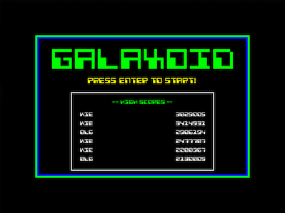

Retro game built using gosu/chingu ruby game libraries
Project maintained by ismyhc
Hosted on GitHub Pages — Theme by mattgraham
Galaxoid is currently in alpha development
Try out Galaxoid Alpha version 0.3
OSX -> Galaxoid_Alpha-v_0_3_OSX.dmg
Windows -> Galaxoid_Alpha-v_0_3_WIN32.zip
Installation instructions
- For installation on windows just unzip and run galaxoid.exe
- For installation on Mac just mount the .dmg and copy galaxoid app to applications
Just a few new features in Alpha Version 0.3
- Fixed performance issues that plagued Version 0.2!
- 4 bullet patterns available be capturing weapon bonuses!
- Bullet patterns stick until you are hit.
- Updated bonus algorithm just a bit.
- Galaxoid now interfaces with a web api to let you know if your version is upto date!
- Help screen at beginning of game with control list, instructions and web messages from Galaxoid System.
Controls
Dodge the enemies by using the arrow keys or a,w,s,d. You can also shoot the enemies by pressing space bar or enter for score bonuses!
Don't miss the falling life,score and weapon powerups for even more bonuses!
Be aware that online scores may become meaningless while in early development because of possible game mechanics changing.
Credits
Special thanks to Spooner for helping me with his releasy gem!